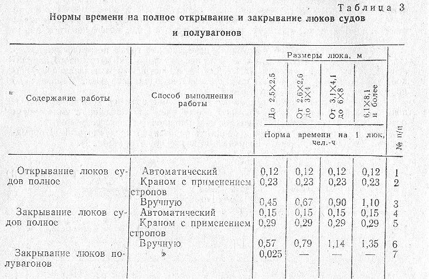

Примечания: 1. В нормах времени учтена относка (подноска)
лючин на расстояние 20м.
2. При одновременном открывании
нескольких люков с телескопическими крышками (способ выполнения
работ автоматический) норма времени принимается равной норме времени для открывания
одного люка.